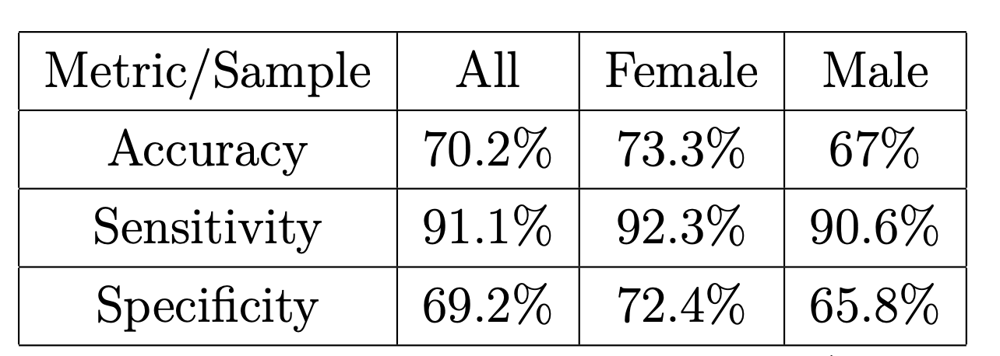

Introduction
Hi, my name is Rada and I am a Data Scientist and Data Analyst with a strong Machine Learning focus. My goal is to translate data into valuable insights and help businesses translate insights into the right actions. I am experienced in the field of Big Data and Machine Learning and enjoy solving complex problems that help companies and society improve. I specialize in Python, R, SQL, Power BI, Tableau, and KNIME. Since August 2020, I have been working as the Nordic Analytics & Insights Manager at Procter & Gamble. As such, I am responsible to build, maintain and continuously improve a Data Ecosystem that brings value to the business in the four Scandinavian countries. I work on projects covering the entire Data Science scope - from Data Gathering and Preprocessing, through Data Analysis and Analytics including the Application of Machine Learning and Statistical models up until Data Visualization - I deep-dive into each of these areas while learning from inspiring professionals at one of the largest consumer products giants. In the meanwhile, I am actively working towards the completion of my MSc degree in Business Analytics at Imperial College London. Prior to this, I completed a BSc in Economics and Computer Science at University Bocconi with a 110/110 Diploma grade, and had various internship, freelance and volunteering experiences in the fields of Machine Learning, Analytics and Marketing. Do you want to know more about my work and abilities? You can find my featured projects in this portfolio, on my Github profile or by reaching out to me via e-mail or LinkedIn.
Featured skills
DATA PREPROCESSING
In my work, I define the data needed to support the business and drive insights. I then gather and extract it leveraging SQL and Python, including some advanced webscraping and OCR techniques. I process and transform the data to make it analyzable in Python and R. Lastly, I validate its accuracy to then be able to load, explore, visualize and apply advanced analytics and machine learning techniques.
DATA ANALYSIS
I am specialized in analyzing data. I find interesting patterns, correlations and trends, which I present in an insightful way to various stakeholders through automated real-time reports or BI tools such as Power BI and Tableau.
APPLICATION OF STATISTICAL AND MACHINE LEARNING MODELS
I apply statistical models, and machine learning techniques to get more value from data. I work on projects including Image Recognition, Natural Language Processing and Network Analytics. In the final semester of my MSc degree I am focusing on developing end-to-end advanced analytics solutions in various industries like the Energy, Supply Chain, Heathcare, Retail and Marketing sector.
VISUALISATION AND OPERALIZATION
I am comfortable to communicate data heavy insights using visualization tools such as matplotlib, seaborn, folium, plotly, ggplot, PowerBI, Tableau and others. In my job, I build automated dashboards in Power BI and Tableau that show the most recent results of the business, the ongoing projects, analyses and applied models. They allow users to examine trends and patterns themselves, in an interactive and customizable way, which enables them to take the right data-driven decisions.
Featured projects
Detection and Reduction of Gender Bias in Medical Diagnosis
This paper tackles the topic of detection and reduction of demographic biases in machine learning applied in medicinal diagnosis by introducing the reader to an empirical study - a machine learning model predicting the occurrence of acute liver failure for a patient. It provides a strategy to develop a well-performing model for medical diagnosis, detect the potential representation biases and choose an approach to reduce them.